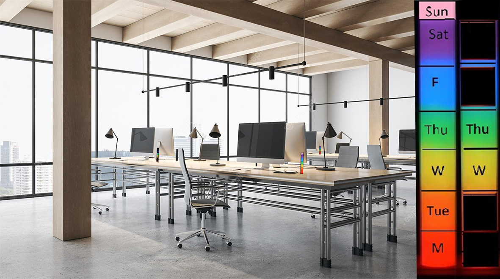

With R.D.C.B.U. (Rainbow Desk Calendar, Booking unit) PrismSpace Edition, Your Colorful Workspace Companion can you be yourself in your everyday life, and respect others at the same time. Rainbow Desk Calendar, “Be Urself".
Listen to the first text::
During the week of Innovation Camp, we made a product where you can book a desk-space in open areas at different workplaces via an app. The app is connected to a product the size of a small rectangle-shaped blackboard pen. It is attached to the desk/workplace. The product will display the colors of a rainbow, starting from the bottom with red, orange, yellow, green, blue, indigo or violet depending on which days of the week are reserved. In addition, on the outside of the Plexiglas, the letters of the different days of the week shows written. The light is only on for the days of the week that have been reserved. On the app, you can book a seat on a desk at the workplace, and see which seats are already been occupied. You can also report sick/no-show from the comfort of your home if you cannot attend the day you had booked, leaving the desk place free to book, turning off the respective lights since its synchronised with the operative system of the app.".
Listen to the second text:
Commercial for RDCBU: